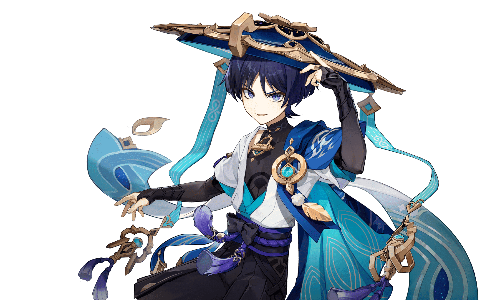
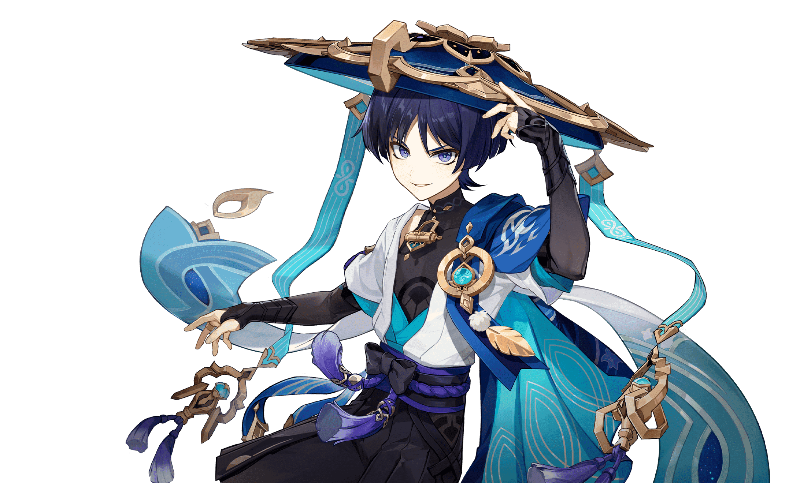
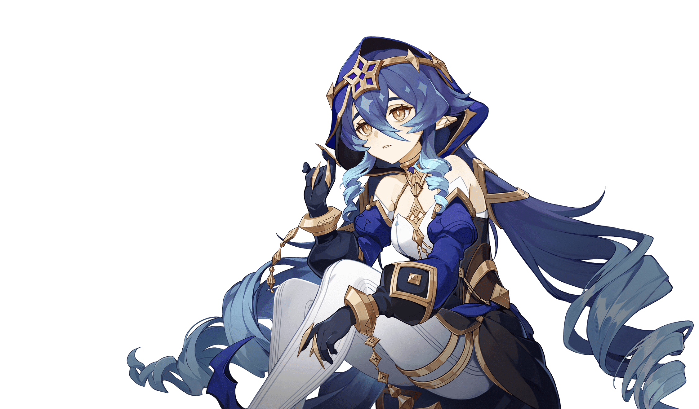
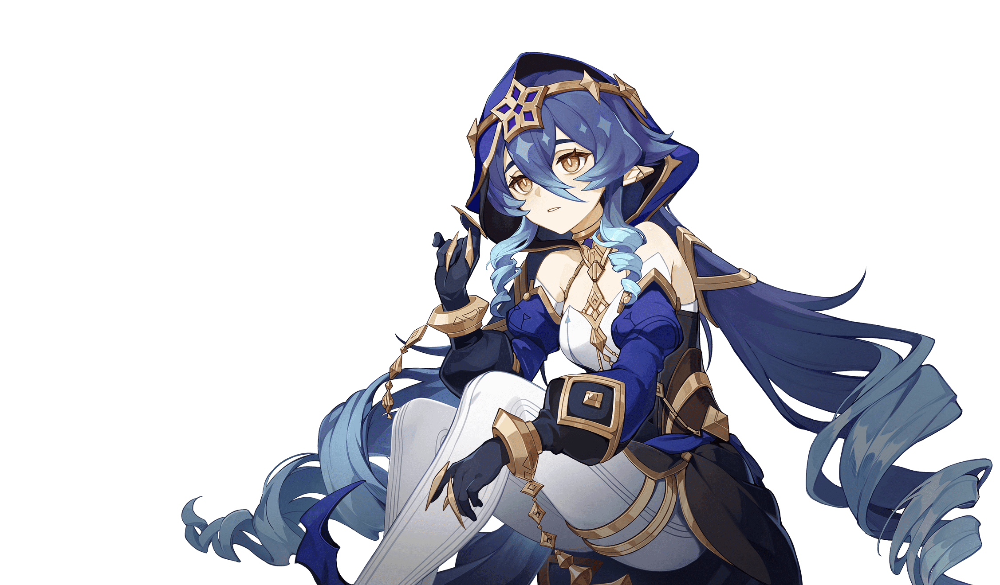

-


ARLOTT
TYPE: Anemo
An Avidya Forest Watcher and botanical scholar who graduated from Amurta. He leads a fruitful life of patrolling the rainforest, protecting the ecology, and lecturing fools every day.
Being a Forest Watcher, Arlott is highly knowledgeable about various species of both plants and animals, particularly flowers and mushrooms. -
 

KHUFRA
TYPE: Hydro
If the measure of humanity is having a heart, then he cannot be deemed as such. If one without a heart experiences joy and sorrow, then he shall be a puppet most alike to humanity.
After erasing his Fatui ties from Irminsul, Khufra is shown to be amiable and yet living an unsatisfactory life as he lacked a human heart and name. -


VEIN
TYPE: Geo
The current scribe of the Highwinds Akademiya, a man endowed with extraordinary intelligence and talent. He lives free — free from the searching eyes of ordinary people, anyway.
Vein is a scholar who is fueled by a desire to understand the underlying principles of the world around him. He greatly values the pursuit of knowledge and dislikes meaningless matters.

DORA
TYPE: Pyro
Dora is a merchant in Highwinds who has a fondness for glittering Mora. With her persuasive eloquence, she is able to sell various strange and mysterious products for a very high price.
Dora is a merchant of high regard in Highwinds, considered the most resourceful merchant who's able to acquire quality goods through her mysterious supply chain. 

TIFA
TYPE: Electro
A Rtawahist student who always looks sleep-deprived. Her dark eye circles have been worsening due to academic stress.
Due to in part of the Akademiya lifestyle, Tifa is highly devoted to her studies, but this has also left her somewhat paranoid and highly sleep deprived, making her very timid and looking like she could collapse from exhaustion at any point.